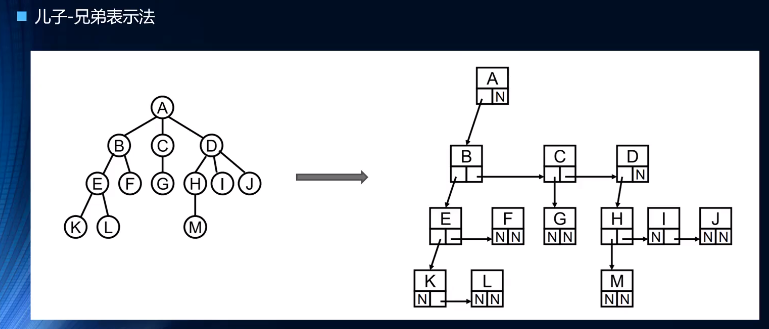
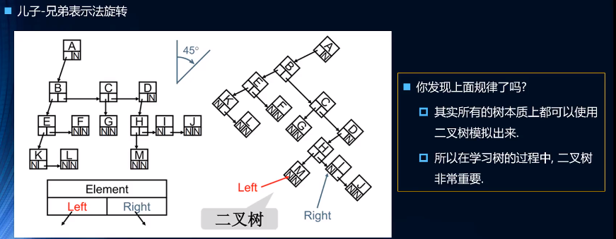

树结构的优点
综合了哈希表、数组数据结构的优点(但不足与盖过其他数据结构，比如效率就没哈希表高)
树：n(n >= 0) 个节点构成的有限集合。当 n = 0 时，称为空树。
对于任意一颗非空树都有下面特:征
树中有一个称为"根(root)"的特殊节点，用 r 表示。
其余节点可分为m(m > 0)个互不相交的有限集 T1, T2,..., Tm, 其中每个集合本身又是一颗树，称为原来树的"子树"
树的术语
- 节点的度(Degree)：节点的子树个数
- 树的度：树的所有节点中最大的度
- 叶节点(Leaf)：度为 0 的节点（也称为叶子节点）
- 父节点(Parent)：有子树的节点是其子树的根节点的父节点
- 子节点(Child)：若A节点是B节点的父节点，则称B节点是A节点的子节点；子节点也称孩子节点
- 兄弟节点(Sibling)：具有同一父节点的各节点彼此是兄弟节点
- 路径和路径长度：节点n1到nk的路径为一个节点序列n1,n2,..,nk, ni是ni+1的父节点。路径所包含边的个数为路径的长度
- 节点的层次(Level)：规定根节点在1层，其他任一节点的层数是其父节点的层数加1
- 树的深度(Depth)：树中所有节点中最大层次是这棵树的深度

